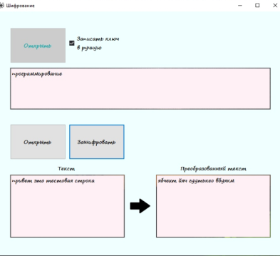
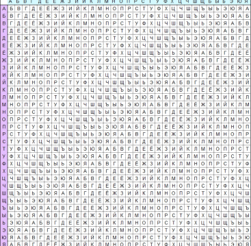

The Vigenere Cipher
Лицензия программы для шифрования текста
Разработчик: Зверев С.В., Худжадзе А.Э.
Обновлено: 17.09.2020
Архитектура: x64
Интерфейс: русский
Категория: программа шифрования
Лицензия
Тип продукта: чистая установка
Количество пользователей: 1шт
Срок действия: 36 мес
Описание:
Программа предназначена для шифрования текста по Шифру
Виженера. Шифр Виженера - это метод шифрования алфавитного текста с помощью серии
переплетенных шифров Цезаря, основанных на буквах ключевого слова.
Он использует форму полиалфавитного замещения.

